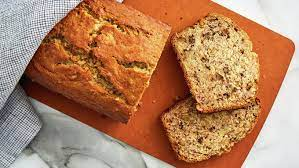

Banana Bread

Very tasty banana bread
Awesome banana bread that super tasty.
I will eat it if you don't want it.
Ingredients:
- 1/3 cup Butter (melted)
- 3/4 cup Sugar (granulated)
- 2-4 Bananas very ripe
- 2-4 Bananas very ripe
- 1 Egg large
- 1 tsp Vanilla Extract
- 1 tsp Baking Soda
- 1/2 tsp Cinnamon ground
- 1/4 tsp Nutmeg
- 1 1/2 cups Flour
Instructions:
- Preheat oven to 350 degrees F.
- Prepare a loaf pan with butter, oil, or even Pam spray.
- In a mixing bowl, combine the melted butter and sugar.
- Add the bananas. Mash them then mix into the butter and sugar mixture.
- Add the egg and vanilla extract. Stir.
- Mix in the baking soda, cinnamon, nutmeg, and flour.
- Pour the batter into the prepared loaf pan.
-
Bake for about 40 minutes or until an
inserted toothpick comes out clean.
OVEN TIMES VARY. Some people need 55 minutes.
Others need 30 minutes. Please use your own
judgment and the toothpick trick
(insert a wooden toothpick in the middle of
the bread. If it comes out clean, the bread
is done. If it comes out with batter on the
toothpick, please continue baking. It is not
done). In a fairly new, convection oven, it
takes around 40 minutes for my bread to be
done.
- Remove from oven and let cool. For clean slices, please allow the bread to completely cool.